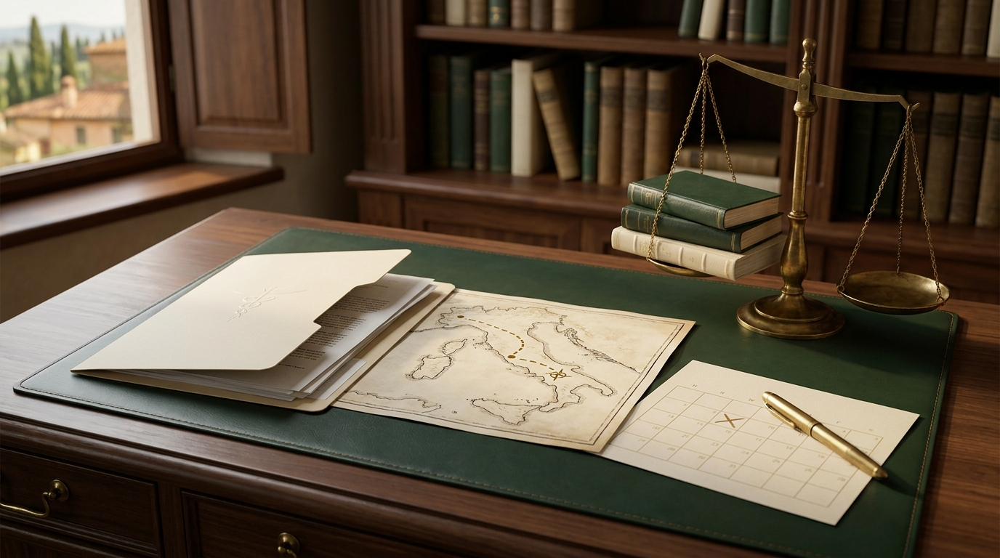

Legge 104 e diritto al trasferimento: quando l'azienda può dire no
Chi assiste un familiare con disabilità grave può chiedere il trasferimento nella sede più vicina alla propria abitazione. Ma non si tratta di un diritto incondizionato: la giurisprudenza richiede un bilanciamento con le esigenze organizzative dell'impresa. Decisivo è capire chi deve provare cosa, perché l'onere ricade sul datore di lavoro.

Il caso
Il diritto al trasferimento previsto dalla Legge 104 torna periodicamente all'attenzione dei giudici. La domanda di fondo è semplice: il lavoratore che assiste un familiare disabile può sempre ottenere l'avvicinamento alla sede più comoda? La risposta della Cassazione è articolata e merita una lettura attenta, perché incide direttamente sulle scelte di chi vive questa condizione.
Inquadramento normativo
La fonte è l'articolo 33, comma 5, della Legge 104/1992. La norma riconosce al lavoratore che assiste, con continuità ed esclusività, un familiare in situazione di disabilità grave (accertata ai sensi dell'art. 3, comma 3, della stessa legge) il diritto a scegliere, ove possibile, la sede di lavoro più vicina al domicilio della persona assistita. Lo stesso lavoratore non può essere trasferito senza il suo consenso ad altra sede.
L'espressione "ove possibile" è il cuore della questione. La Corte di Cassazione, Sezione Lavoro, ha più volte chiarito che il diritto non è assoluto: va contemperato con le esigenze tecniche, organizzative e produttive del datore di lavoro. Le Sezioni Unite hanno consolidato questa lettura, escludendo che la richiesta del dipendente possa comprimere in modo intollerabile l'organizzazione aziendale o pregiudicare i diritti di altri lavoratori.
Il bilanciamento e l'onere della prova
Il punto operativo più rilevante riguarda la ripartizione dell'onere probatorio. Secondo la giurisprudenza di legittimità, il lavoratore deve dimostrare di trovarsi nelle condizioni previste dalla norma: la disabilità grave del familiare, il rapporto di assistenza continuativa, l'esistenza di un posto disponibile presso la sede richiesta.
Spetta invece al datore di lavoro provare le ragioni concrete che rendono impossibile o eccessivamente gravoso il trasferimento. Non basta un'affermazione generica sulle esigenze organizzative: occorre dimostrare un ostacolo reale, oggettivo e specifico. La semplice convenienza gestionale non è sufficiente a respingere la richiesta.
Questo schema vale tanto nel lavoro privato quanto nel pubblico impiego, dove l'amministrazione deve motivare in modo puntuale l'eventuale diniego. Il giudice, in caso di contenzioso, verifica se il bilanciamento operato dal datore sia ragionevole e supportato da elementi concreti.
Implicazioni pratiche
Per il lavoratore che assiste un familiare disabile, ciò significa che la domanda di trasferimento ha buone probabilità di accoglimento solo se accompagnata da una documentazione solida. La condizione di disabilità grave deve essere certificata; il rapporto di assistenza deve essere effettivo e dimostrabile.
Per il datore di lavoro, il messaggio è altrettanto chiaro: un diniego improvvisato espone al rischio di soccombenza in giudizio e di condanna al risarcimento. La motivazione del rifiuto deve poggiare su dati verificabili, non su valutazioni discrezionali.
Resta inteso che il presupposto della disponibilità del posto è dirimente. Se nella sede richiesta non vi è alcuna posizione vacante compatibile con la qualifica del dipendente, la richiesta può legittimamente essere respinta. Il diritto non impone all'azienda di creare un posto inesistente.
Cosa fare in concreto
- Raccogliete la documentazione sanitaria che attesta la disabilità grave del familiare ai sensi dell'art. 3, comma 3, della Legge 104, prima di formalizzare qualsiasi richiesta.
- Verificate la disponibilità di un posto presso la sede di destinazione: senza una posizione vacante compatibile, la domanda è esposta al rigetto.
- Formalizzate la richiesta per iscritto, indicando con precisione i presupposti di legge e allegando le prove del rapporto di assistenza continuativa ed esclusiva.
- Se siete datori di lavoro, motivate per iscritto e in modo specifico ogni eventuale diniego, documentando le ragioni organizzative che impediscono il trasferimento.
- Consigliamo di valutare con un professionista la solidità della posizione prima di avviare un contenzioso, sia in fase di richiesta sia in fase di opposizione al rifiuto.
Conclusione
Il trasferimento ex art. 33 Legge 104 non è un automatismo, ma un diritto condizionato a un bilanciamento serio tra interessi contrapposti. La differenza tra accoglimento e rigetto si gioca quasi sempre sul terreno della prova: chi documenta meglio la propria posizione parte avvantaggiato.
---
*Contributo informativo a cura di Tamburro & Partners - Avv. Giuseppe Tamburro. Non costituisce parere legale.*
Ogni storia di lavoro ha i suoi tempi.
Se gestisci HR e vuoi un confronto su contenzioso, ispezioni o licenziamenti, scrivi allo studio. Ti rispondiamo entro un giorno lavorativo.